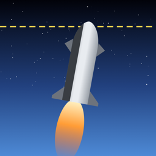

Tiens jusqu’à l’orbite.
Politique de confidentialité
Dernière mise à jour : 28 septembre 2026
En bref : StarBarge n’a pas de compte utilisateur et ne nous envoie aucune donnée. Ta progression reste sur ton téléphone. Les seules données qui quittent l’appareil sont celles traitées par Google AdMob pour afficher les publicités avec récompense, selon tes choix de consentement, et celles traitées par Apple lors d’un achat.
1. Responsable du traitement
Loïc Berger, entrepreneur individuel
SIRET 840 074 686 00030
Contact : lb.loicberger@gmail.com
2. Données enregistrées sur ton appareil
Le jeu enregistre localement, dans un fichier sur ton téléphone : meilleurs scores et altitudes, nombre de vols, skins débloqués et sélectionnés, achats possédés (pour afficher les skins) et réglages (son, vibrations). Ces données ne sont jamais envoyées à l’éditeur. Elles sont supprimées quand tu désinstalles l’app.
3. Publicités (Google AdMob)
Le jeu propose des publicités avec récompense, uniquement si tu choisis de les regarder (pour continuer un vol). Elles sont fournies par Google AdMob (Google Ireland Limited). Pour afficher, mesurer et sécuriser ces publicités, Google peut traiter :
- des identifiants de l’appareil : identifiant publicitaire (IDFA, seulement si tu l’autorises dans la fenêtre « Suivi » d’iOS) et identifiant du fournisseur ;
- l’adresse IP et une localisation approximative déduite de celle-ci ;
- des données d’usage et d’interaction avec les publicités ;
- des données de diagnostic (performances, plantages du SDK).
Base légale : ton consentement (article 6.1.a du RGPD), recueilli au premier lancement via le formulaire de Google (conforme au cadre IAB TCF), pour le stockage d’informations sur l’appareil et les publicités personnalisées. Certains partenaires publicitaires invoquent l’intérêt légitime pour des finalités comme la mesure ou la prévention de la fraude ; tu peux t’y opposer dans le même formulaire. Si tu refuses, des publicités non personnalisées ou limitées peuvent être affichées.
Modifier tes choix à tout moment : dans le jeu, Hangar > Réglages > Confidentialité des pubs. Pour le suivi publicitaire iOS : Réglages > Confidentialité et sécurité > Suivi.
En savoir plus : Règles de confidentialité de Google · Comment Google utilise les données des apps partenaires.
4. Achats intégrés
Les packs cosmétiques sont vendus via l’App Store. Le paiement est entièrement traité par Apple : l’éditeur ne reçoit ni tes coordonnées bancaires ni ton identité. L’app vérifie seulement, sur ton appareil, quels achats tu possèdes. Voir la politique de confidentialité d’Apple.
5. Partage et défis
Quand tu appuies sur « Partager », le jeu prépare une image et un texte (score, altitude, code de défi) et ouvre la feuille de partage de ton téléphone. C’est toi qui choisis l’app de destination (X, Instagram, Messages…). L’éditeur ne reçoit rien. Le code de défi contient uniquement ton score et l’identifiant de la trajectoire.
6. Transferts hors de l’Union européenne
Google peut traiter des données aux États-Unis. Ces transferts sont encadrés par le Data Privacy Framework UE–États-Unis et par des clauses contractuelles types de la Commission européenne.
7. Durée de conservation
- Données locales : jusqu’à la désinstallation de l’app.
- Données publicitaires : selon les durées définies par Google (voir ses règles de confidentialité).
- Emails envoyés au support : le temps de traiter ta demande, puis 12 mois au plus.
8. Tes droits
Tu disposes des droits d’accès, de rectification, d’effacement, de limitation, d’opposition et de portabilité, ainsi que du droit de retirer ton consentement à tout moment. L’éditeur ne détenant aucune donnée te concernant (hors emails de support), la plupart des demandes se règlent directement sur l’appareil : désinstaller l’app efface toutes les données locales. Pour les données publicitaires, tu peux aussi t’adresser à Google. Pour toute question : lb.loicberger@gmail.com.
Tu peux introduire une réclamation auprès de la CNIL : cnil.fr/fr/plaintes.
9. Enfants
StarBarge ne s’adresse pas spécifiquement aux enfants de moins de 13 ans et l’éditeur ne collecte pas sciemment de données les concernant.
10. Modifications
Cette politique peut évoluer (par exemple avec une version Android). La date de mise à jour en haut de page sera alors modifiée.
Privacy Policy
Last updated: September 28, 2026
In short: StarBarge has no user accounts and sends no data to us. Your progress stays on your phone. The only data leaving the device is processed by Google AdMob to show rewarded ads, according to your consent choices, and by Apple when you make a purchase.
1. Data controller
Loïc Berger, sole proprietor (France)
SIRET 840 074 686 00030
Contact: lb.loicberger@gmail.com
2. Data stored on your device
The game stores locally, in a file on your phone: best scores and altitudes, number of flights, unlocked and selected skins, owned purchases (to display skins) and settings (sound, haptics). This data is never sent to the publisher and is deleted when you uninstall the app.
3. Advertising (Google AdMob)
The game offers rewarded ads that you choose to watch (to continue a flight). They are provided by Google AdMob (Google Ireland Limited). To serve, measure and secure these ads, Google may process:
- device identifiers: advertising identifier (IDFA, only if you allow it in the iOS “Tracking” prompt) and identifier for vendor;
- IP address and an approximate location derived from it;
- usage data and interactions with ads;
- diagnostic data (performance, SDK crashes).
Legal basis: your consent (GDPR Article 6(1)(a)), collected at first launch through Google’s consent form (IAB TCF compliant), for storing information on the device and for personalized ads. Some ad partners rely on legitimate interest for purposes such as measurement or fraud prevention; you can object in the same form. If you decline, non-personalized or limited ads may be shown.
Change your choices at any time: in the game, Hangar > Settings > Ad privacy settings. For iOS ad tracking: Settings > Privacy & Security > Tracking.
Learn more: Google Privacy Policy · How Google uses data from partner apps.
4. In-app purchases
Cosmetic packs are sold through the App Store. Payment is handled entirely by Apple: the publisher receives neither your payment details nor your identity. The app only checks, on your device, which purchases you own. See Apple’s Privacy Policy.
5. Sharing and challenges
When you tap “Share”, the game prepares an image and a text (score, altitude, challenge code) and opens your phone’s share sheet. You choose the destination app (X, Instagram, Messages…). The publisher receives nothing. The challenge code only contains your score and the trajectory identifier.
6. Transfers outside the European Union
Google may process data in the United States. These transfers are covered by the EU–US Data Privacy Framework and by the European Commission’s standard contractual clauses.
7. Retention
- Local data: until the app is uninstalled.
- Advertising data: according to Google’s retention periods (see its privacy policy).
- Support emails: while your request is handled, then 12 months at most.
8. Your rights
You have the rights of access, rectification, erasure, restriction, objection and portability, and you can withdraw your consent at any time. As the publisher holds no data about you (apart from support emails), most requests are handled directly on the device: uninstalling the app erases all local data. For advertising data, you can also contact Google. Any question: lb.loicberger@gmail.com.
You can lodge a complaint with the French data protection authority (CNIL): cnil.fr/fr/plaintes, or with the authority of your country.
9. Children
StarBarge is not specifically directed at children under 13 and the publisher does not knowingly collect data about them.
10. Changes
This policy may change (for example with an Android version). The “last updated” date at the top will then be updated.